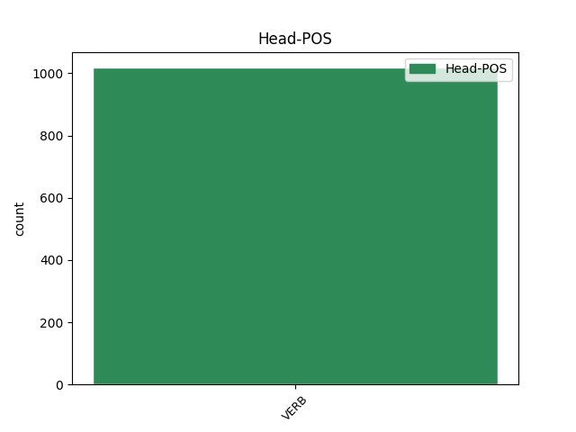

Distribution of features within this leaf

Agreement Rules sorted by frequency.
- When the dependent token is the subject(subj) of the head token, and the head token is AUX
1 nam _ _ _ _ 0 _ _ _
2 et _ _ _ _ 0 _ _ _
3 quod _ _ _ _ 0 _ _ _
4 decet decet VERB V- Mood=Ind|Number=Sing|Person=3|Tense=Pres|VerbForm=Fin|Voice=Act 6 subj _ ref=1.94
5 honestum _ _ _ _ 0 _ _ _
6 est sum AUX V- Mood=Ind|Number=Sing|Person=3|Tense=Pres|VerbForm=Fin|Voice=Act 0 _ _ _
7 et _ _ _ _ 0 _ _ _
8 quod _ _ _ _ 0 _ _ _
9 honestum _ _ _ _ 0 _ _ _
10 est _ _ _ _ 0 _ _ _
11 decet _ _ _ _ 0 _ _ _
1 Nam _ _ _ _ 0 _ _ _
2 ut _ _ _ _ 0 _ _ _
3 adversas _ _ _ _ 0 _ _ _
4 res _ _ _ _ 0 _ _ _
5 sic _ _ _ _ 0 _ _ _
6 secundas _ _ _ _ 0 _ _ _
7 immoderate _ _ _ _ 0 _ _ _
8 ferre _ _ _ _ 0 _ _ _
9 levitatis _ _ _ _ 0 _ _ _
10 est _ _ _ _ 0 _ _ _
11 praeclara _ _ _ _ 0 _ _ _
12 que _ _ _ _ 0 _ _ _
13 est sum AUX V- Mood=Ind|Number=Sing|Person=3|Tense=Pres|VerbForm=Fin|Voice=Act 0 _ _ _
14 aequabilitas _ _ _ _ 0 _ _ _
15 in _ _ _ _ 0 _ _ _
16 omni _ _ _ _ 0 _ _ _
17 vita _ _ _ _ 0 _ _ _
18 et _ _ _ _ 0 _ _ _
19 idem _ _ _ _ 0 _ _ _
20 semper _ _ _ _ 0 _ _ _
21 vultus _ _ _ _ 0 _ _ _
22 eadem _ _ _ _ 0 _ _ _
23 que _ _ _ _ 0 _ _ _
24 frons _ _ _ _ 0 _ _ _
25 ut _ _ _ _ 0 _ _ _
26 de _ _ _ _ 0 _ _ _
27 Socrate _ _ _ _ 0 _ _ _
28 itemque _ _ _ _ 0 _ _ _
29 de _ _ _ _ 0 _ _ _
30 Gaio _ _ _ _ 0 _ _ _
31 Laelio _ _ _ _ 0 _ _ _
32 accepimus accipio VERB V- Aspect=Perf|Mood=Ind|Number=Plur|Person=1|Tense=Past|VerbForm=Fin|Voice=Act 13 mod _ ref=1.90
1 quae _ _ _ _ 0 _ _ _
2 si _ _ _ _ 0 _ _ _
3 desederit _ _ _ _ 0 _ _ _
4 magis _ _ _ _ 0 _ _ _
5 erunt sum AUX V- Mood=Ind|Number=Plur|Person=3|Tense=Fut|VerbForm=Fin|Voice=Act 0 _ _ _
6 liquata _ _ _ _ 0 _ _ _
7 quae _ _ _ _ 0 _ _ _
8 scribam scribo VERB V- Mood=Ind|Number=Sing|Person=1|Tense=Fut|VerbForm=Fin|Voice=Act 5 subj@pass _ ref=2.12.3
1 Quintilis _ _ _ _ 0 _ _ _
2 si _ _ _ _ 0 _ _ _
3 erit sum AUX V- Mood=Ind|Number=Sing|Person=3|Tense=Fut|VerbForm=Fin|Voice=Act 0 _ _ _
4 ut _ _ _ _ 0 _ _ _
5 volumus volo VERB V- Mood=Ind|Number=Plur|Person=1|Tense=Pres|VerbForm=Fin|Voice=Act 3 comp:pred _ LId=1|ref=5.21.9
6 in _ _ _ _ 0 _ _ _
7 itinere _ _ _ _ 0 _ _ _
8 est _ _ _ _ 0 _ _ _
9 per _ _ _ _ 0 _ _ _
10 provinciam _ _ _ _ 0 _ _ _
11 redeuntibus _ _ _ _ 0 _ _ _
12 consumendus _ _ _ _ 0 _ _ _
1 Animadvertendum _ _ _ _ 0 _ _ _
2 est _ _ _ _ 0 _ _ _
3 etiam _ _ _ _ 0 _ _ _
4 quatenus _ _ _ _ 0 _ _ _
5 sermo _ _ _ _ 0 _ _ _
6 delectationem _ _ _ _ 0 _ _ _
7 habeat _ _ _ _ 0 _ _ _
8 et _ _ _ _ 0 _ _ _
9 ut _ _ _ _ 0 _ _ _
10 incipiendi _ _ _ _ 0 _ _ _
11 ratio _ _ _ _ 0 _ _ _
12 fuerit sum AUX V- Aspect=Perf|Mood=Sub|Number=Sing|Person=3|Tense=Past|VerbForm=Fin|Voice=Act 14 dislocated _ ref=1.135
13 ita _ _ _ _ 0 _ _ _
14 sit sum AUX V- Mood=Sub|Number=Sing|Person=3|Tense=Pres|VerbForm=Fin|Voice=Act 0 _ _ _
15 desinendi _ _ _ _ 0 _ _ _
16 modus _ _ _ _ 0 _ _ _
1 quamquam _ _ _ _ 0 _ _ _
2 haec _ _ _ _ 0 _ _ _
3 quidem _ _ _ _ 0 _ _ _
4 res _ _ _ _ 0 _ _ _
5 non _ _ _ _ 0 _ _ _
6 solum _ _ _ _ 0 _ _ _
7 ex _ _ _ _ 0 _ _ _
8 domestica _ _ _ _ 0 _ _ _
9 est sum AUX V- Mood=Ind|Number=Sing|Person=3|Tense=Pres|VerbForm=Fin|Voice=Act 0 _ _ _
10 ratione _ _ _ _ 0 _ _ _
11 attingit attingo VERB V- Mood=Ind|Number=Sing|Person=3|Tense=Pres|VerbForm=Fin|Voice=Act 9 parataxis _ ref=1.76
12 etiam _ _ _ _ 0 _ _ _
13 bellicam _ _ _ _ 0 _ _ _
14 quoniam _ _ _ _ 0 _ _ _
15 vi _ _ _ _ 0 _ _ _
16 manu _ _ _ _ 0 _ _ _
17 que _ _ _ _ 0 _ _ _
18 confecta _ _ _ _ 0 _ _ _
19 est _ _ _ _ 0 _ _ _
20 sed _ _ _ _ 0 _ _ _
21 tamen _ _ _ _ 0 _ _ _
22 id _ _ _ _ 0 _ _ _
23 ipsum _ _ _ _ 0 _ _ _
24 est _ _ _ _ 0 _ _ _
25 gestum _ _ _ _ 0 _ _ _
26 consilio _ _ _ _ 0 _ _ _
27 urbano _ _ _ _ 0 _ _ _
28 sine _ _ _ _ 0 _ _ _
29 exercitu _ _ _ _ 0 _ _ _
1 ipse _ _ _ _ 0 _ _ _
2 est sum AUX V- Mood=Ind|Number=Sing|Person=3|Tense=Pres|VerbForm=Fin|Voice=Act 7 comp:aux _ ref=JOHN_1.27
3 qui _ _ _ _ 0 _ _ _
4 post _ _ _ _ 0 _ _ _
5 me _ _ _ _ 0 _ _ _
6 venturus _ _ _ _ 0 _ _ _
7 est sum AUX V- Mood=Ind|Number=Sing|Person=3|Tense=Pres|VerbForm=Fin|Voice=Act 0 _ _ _
8 qui _ _ _ _ 0 _ _ _
9 ante _ _ _ _ 0 _ _ _
10 me _ _ _ _ 0 _ _ _
11 factus _ _ _ _ 0 _ _ _
12 est _ _ _ _ 0 _ _ _
13 cuius _ _ _ _ 0 _ _ _
14 ego _ _ _ _ 0 _ _ _
15 non _ _ _ _ 0 _ _ _
16 sum _ _ _ _ 0 _ _ _
17 dignus _ _ _ _ 0 _ _ _
18 ut _ _ _ _ 0 _ _ _
19 solvam _ _ _ _ 0 _ _ _
20 eius _ _ _ _ 0 _ _ _
21 corrigiam _ _ _ _ 0 _ _ _
22 calciamenti _ _ _ _ 0 _ _ _
1 iustus _ _ _ _ 0 _ _ _
2 es sum AUX V- Mood=Ind|Number=Sing|Person=2|Tense=Pres|VerbForm=Fin|Voice=Act 0 _ _ _
3 qui _ _ _ _ 0 _ _ _
4 es sum AUX V- Mood=Ind|Number=Sing|Person=2|Tense=Pres|VerbForm=Fin|Voice=Act 2 vocative _ ref=REV_16.5
5 et _ _ _ _ 0 _ _ _
6 qui _ _ _ _ 0 _ _ _
7 eras _ _ _ _ 0 _ _ _
8 sanctus _ _ _ _ 0 _ _ _
9 quia _ _ _ _ 0 _ _ _
10 haec _ _ _ _ 0 _ _ _
11 iudicasti _ _ _ _ 0 _ _ _
12 quia _ _ _ _ 0 _ _ _
13 sanguinem _ _ _ _ 0 _ _ _
14 sanctorum _ _ _ _ 0 _ _ _
15 et _ _ _ _ 0 _ _ _
16 prophetarum _ _ _ _ 0 _ _ _
17 fuderunt _ _ _ _ 0 _ _ _
18 et _ _ _ _ 0 _ _ _
19 sanguinem _ _ _ _ 0 _ _ _
20 eis _ _ _ _ 0 _ _ _
21 dedisti _ _ _ _ 0 _ _ _
22 bibere _ _ _ _ 0 _ _ _
Disagree Examples:
1 et _ _ _ _ 0 _ _ _
2 beatus _ _ _ _ 0 _ _ _
3 est sum AUX V- Mood=Ind|Number=Sing|Person=3|Tense=Pres|VerbForm=Fin|Voice=Act 0 _ _ _
4 qui _ _ _ _ 0 _ _ _
5 non _ _ _ _ 0 _ _ _
6 fuerit sum AUX V- Aspect=Perf|Mood=Sub|Number=Sing|Person=3|Tense=Past|VerbForm=Fin|Voice=Act 3 subj _ ref=MATT_11.6
7 scandalizatus _ _ _ _ 0 _ _ _
8 in _ _ _ _ 0 _ _ _
9 me _ _ _ _ 0 _ _ _
1 quicumque _ _ _ _ 0 _ _ _
2 enim _ _ _ _ 0 _ _ _
3 fecerit facio VERB V- Aspect=Perf|Mood=Sub|Number=Sing|Person=3|Tense=Past|VerbForm=Fin|Voice=Act 19 dislocated _ ref=MATT_12.50
4 voluntatem _ _ _ _ 0 _ _ _
5 Patris _ _ _ _ 0 _ _ _
6 mei _ _ _ _ 0 _ _ _
7 qui _ _ _ _ 0 _ _ _
8 in _ _ _ _ 0 _ _ _
9 caelis _ _ _ _ 0 _ _ _
10 est _ _ _ _ 0 _ _ _
11 ipse _ _ _ _ 0 _ _ _
12 meus _ _ _ _ 0 _ _ _
13 et _ _ _ _ 0 _ _ _
14 frater _ _ _ _ 0 _ _ _
15 et _ _ _ _ 0 _ _ _
16 soror _ _ _ _ 0 _ _ _
17 et _ _ _ _ 0 _ _ _
18 mater _ _ _ _ 0 _ _ _
19 est sum AUX V- Mood=Ind|Number=Sing|Person=3|Tense=Pres|VerbForm=Fin|Voice=Act 0 _ _ _
1 sed _ _ _ _ 0 _ _ _
2 quicumque _ _ _ _ 0 _ _ _
3 voluerit volo VERB V- Aspect=Perf|Mood=Ind|Number=Sing|Person=3|Tense=Fut|VerbForm=Fin|Voice=Act 8 subj _ LId=1|ref=MATT_20.26
4 inter _ _ _ _ 0 _ _ _
5 vos _ _ _ _ 0 _ _ _
6 maior _ _ _ _ 0 _ _ _
7 fieri _ _ _ _ 0 _ _ _
8 sit sum AUX V- Mood=Sub|Number=Sing|Person=3|Tense=Pres|VerbForm=Fin|Voice=Act 0 _ _ _
9 vester _ _ _ _ 0 _ _ _
10 minister _ _ _ _ 0 _ _ _
1 quicumque _ _ _ _ 0 _ _ _
2 iuraverit iuro VERB V- Aspect=Perf|Mood=Sub|Number=Sing|Person=3|Tense=Past|VerbForm=Fin|Voice=Act 6 subj _ ref=MATT_23.16
3 per _ _ _ _ 0 _ _ _
4 templum _ _ _ _ 0 _ _ _
5 nihil _ _ _ _ 0 _ _ _
6 est sum AUX V- Mood=Ind|Number=Sing|Person=3|Tense=Pres|VerbForm=Fin|Voice=Act 0 _ _ _
1 et _ _ _ _ 0 _ _ _
2 quicumque _ _ _ _ 0 _ _ _
3 iuraverit iuro VERB V- Aspect=Perf|Mood=Sub|Number=Sing|Person=3|Tense=Past|VerbForm=Fin|Voice=Act 7 subj _ ref=MATT_23.18
4 in _ _ _ _ 0 _ _ _
5 altari _ _ _ _ 0 _ _ _
6 nihil _ _ _ _ 0 _ _ _
7 est sum AUX V- Mood=Ind|Number=Sing|Person=3|Tense=Pres|VerbForm=Fin|Voice=Act 0 _ _ _